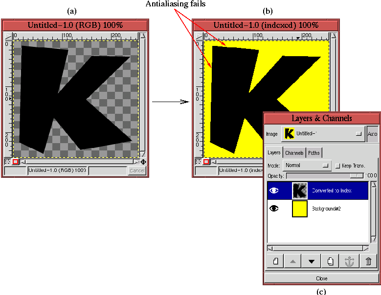
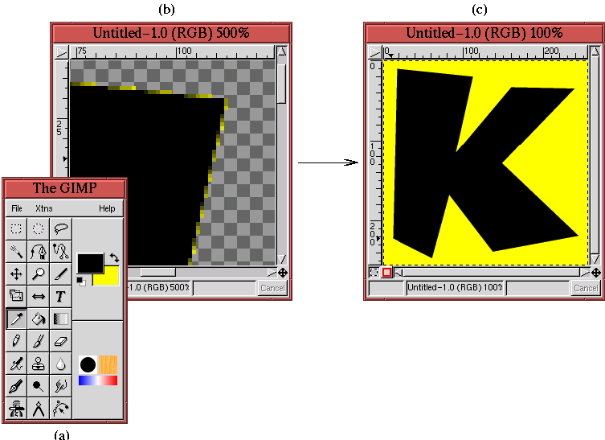

Next: 9.7 Which Format GIF
Up: 9. Web-Centric GIMP
Previous: 9.5 Web-Safe Color
9.6 Semi-Transparency and Indexed Images
Semi-transparency presents a particularly knotty problem when
converting an image to Indexed format. This is a problem for indexed
images because they only support alpha values of 0 (fully transparent)
and 255 (fully opaque). When converting to Indexed format, partially
transparent pixels (that is, with alpha values in the range 1 to 254)
have their alpha values forced to 0 or 255. This is a problem for
antialiasing (see Section 3.1.2)
and for the general use of transparency in indexed images.
Fortunately, there is a solution. The Semi-Flatten plug-in is a work-around for the
problem of semi-transparency in indexed images. This filter, found in
the Image:Filters/Colors menu, requires knowing the background
color that will be used beneath the semi-transparent image. If you
can't determine the background color in advance, the Semi-Flatten filter cannot help you.
To use the Semi-Flatten filter, you must determine the color
that will be behind the semi-transparent image and you must specify it
in the Active Background Color patch in the Toolbox window. The
Color Picker tool can be useful for
determining colors, and although the Color Picker automatically
sets the Active Foreground Color you can easily toggle this
color to the background by clicking on the Switch Colors icon
(the two-headed arrow above the foreground/background color patches in
the Toolbox). The semi-flattening process combines the Active
Background Color with the layer colors in proportion to the layer's
alpha values.
As an example, Figure 9.30
Figure 9.30:
Antialiased Text After Conversion to Indexed...Yeeeks!
|  |
illustrates how a conversion to Indexed format ruins the antialiasing
of some text. Figure 9.30(a) shows a
transparent layer containing the letter K from the Comicscartoon font
at a size of 275 pixels. Antialiasing was turned on when the text was
created; however, when this image is converted to indexed format the
antialiasing is lost, as can be more plainly seen when the letter is
placed over a yellow background. This is shown in
Figure 9.30(b). The jagged staircase effect
is clearly visible at the edges of the letter.
Figure 9.30(c) shows the disposition of the
two layers in the Layers dialog.
Figure 9.31
Figure 9.31:
Using Semi-Flatten to Preserve the Effect of Semi-Transparency
|  |
shows how using Semi-Flatten resolves the antialiasing problem.
Figure 9.31(a) displays the Toolbox window,
which shows that the Active Background Color patch has been set
to the yellow color seen in Figure 9.30(b).
Figure 9.31(b) shows a zoomed version of the
result after applying Semi-Flatten to
Figure 9.30(a). The edges of the letter K
now show that the semi-transparent pixels that were used for
antialiasing have taken on color values between the black of the
letter and the yellow of the Active Background Color. Pixels
that were fully transparent have remained so. The result of placing
this layer over a yellow background layer is shown in
Figure 9.31(c). You can see that the
antialiasing effect has been conserved.
Next: 9.7 Which Format GIF
Up: 9. Web-Centric GIMP
Previous: 9.5 Web-Safe Color
©2000 Gimp-Savvy.com